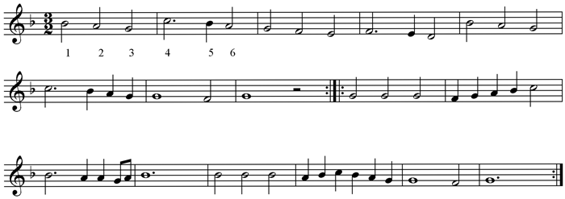
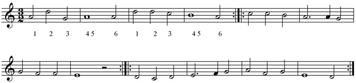
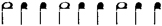
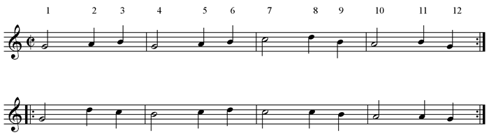
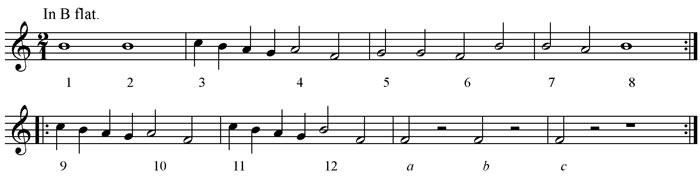
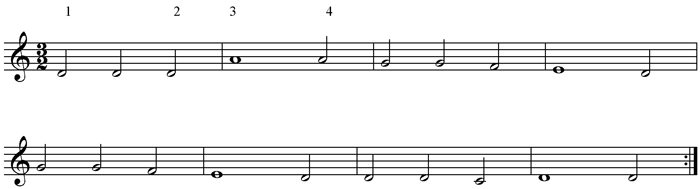
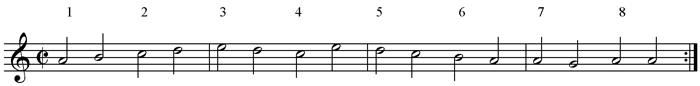
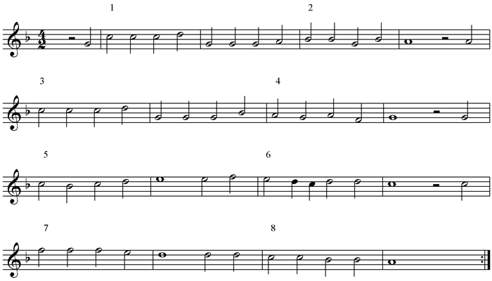
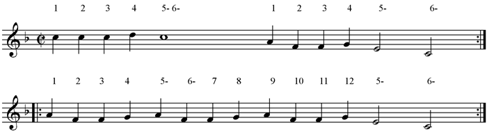

Sir To. What is thy excellence in a galliard, knight?
Sir And. 'Faith, I can cut a caper.
* * * * *
L. 123.
Sir To. Wherefore are these things hid?... why dost thou not go to church in a galliard, and come home in a coranto? My very walk should be a jig: ... sink-a-pace. What dost thou mean? is it a world to hide virtues in? I did think, by the excellent constitution of thy leg, it was formed under the star of a galliard.
To take these five dances in order—
1. Cinquepace is the name of the original Galliard. Praetorius (b. 1571) says a Galliard has five steps, and is therefore called Cinque Pas. These five steps are described in the Orchésographie, 1588. See the Note on that work for the explanation of the steps of this and other Shakespeare dances.
Beatrice's description seems to connect the cinquepace with the tottering and uncertain steps of old age. 'Repentance,' she says, 'with his bad legs falls into the cinquepace faster and faster, till he sink into his grave.'
2. Coranto is the Italian form of our Country dance. The Country dance is original in England, but under different foreign names has been called French or Italian. It means simply 'country' or 'rustic' dance. Skeat is entirely opposed to the derivation from Contra danza, with a supposed reference to two opposite lines of partners; and in this he is confirmed by Shakespeare, Tempest IV, i, 138, 'country footing.' The old English name was 'current traverse,' and Morley (1597) speaks of the Courant step as 'travising and running,' which would appear to connect the Italian word with curro. Sir John Davies (1570-1626), in his poem 'Orchestra,' identifies Rounds, Corantos, measures, and some other dances with Country Dances. That is, whatever the rhythm or speed of the actual tune used, these variously named Country Dances could be performed to it. Sir Roger de Coverly, our typical English Country Dance, is in form almost the same as the Brawl, Coranto, Galliard, or measure. A Courant by Frescobaldi (1591-1640) is in triple time. As for its 'step,' Davies says it is 'on a triple dactile foot,' 'close by the ground with sliding passages.' According to Sir Toby, it would be a quicker and gayer dance than the Galliard, for he compares the walk to church to the latter; but the more lighthearted journey back to dinner he likens to the Coranto. The Jig would be even faster, for Sir Andrew's 'very walk,' that is, his week-day gait, was to be 'a jig.'
3. The Galliard, in accordance with its derivation, is properly described in H. 5. I, ii, 252, as a 'nimble' galliard. This was extremely popular, both as a virginal piece and for dancing. There is quite a long list of Galliards by various composers, in Qu. Elizabeth's Virginal Book. There are several in Parthenia (1611) by Byrde, Bull, and Gibbons. They are always in triple time, and consist of either two or three strains of an even number of bars.
Sir Toby seems to connect a Galliard with somewhat violent 'capers.' He remarks on the 'excellent constitution' of Sir Andrew's leg, 'it was formed under the star of a galliard.' Sir Andrew complacently replies, 'Ay, 'tis strong,' upon which Sir Toby proposes to the foolish knight to give an example of his powers; 'Let me see thee caper. Ha! higher.' This capering or 'sault majeur' was also a feature of the 'high lavolt' [La Volta] mentioned in Troilus IV, iv, 84, concerning which Sir John Davies says—
| 'An anapaest is all their music's song, Whose first two feet are short, and third is long.' |
Also he calls the lavolte 'a lofty jumping.' Morley (1597) speaks of the Volte, and says it is characterised by 'rising and leaping,' and is of the same 'measure' as a coranto. These statements do not all agree with the 'Orchésographie.'
4. Jigg [later Gigue, and Jig]. The name comes from Giga (Geige), a sort of fiddle in use during the 12th and 13th centuries. The oldest jigs are Scottish, and were 'round dances' for a large number of people. As for the time of the Jig tunes, those of the 18th century were certainly written in a triple rhythm, like 3/8, 6/4 or 12/8. The Jegge of 1678, mentioned above, is in quick 6/4 time. But 'The Cobbler's Jig' [Appendix], 1622, and a Jigg by Matthew Locke, dated 1672, in his 'Compositions for Broken and Whole Consorts of 2, 3, 4, 5, and 6 parts,' are very decidedly in quick 4/4 time, and have no such characteristics as a 'dotted note' anywhere about them. Moreover, Bull's 'The King's Hunting Jigg,' is also in quick 4/4 time, with a similar absence of dotted notes. This last example is probably earlier than 1600. At any rate it was a lively dance, as we can learn from Hamlet.
Hamlet II, ii, 504. The 1st Player recites a speech.
Polonius. This is too long.
Hamlet. It shall to the barber's, with your beard.—Pr'ythee (to the 1st Player), say on: he's for a jig, ... or he sleeps.
5. Measure. Beatrice, in the quoted passage from Much Ado About Nothing, gives a capital idea of the relative speed of the Scotch jig and the Measure. The jig, she says, is like the lover's wooing, hot, hasty, and fantastical; the measure, however, is like the Wedding, mannerly modest, full of state and ancientry.
The term Measure certainly seems to have been used to signify a particularly staid and formal dance. Selden (see above), at least, puts 'grave Measures' at the sober beginning of his list, and so goes on, by easy descent, through the more spirited Coranto, and tolerably lively Galliard, to the lower depths of the Cushion-Dance, which were reached towards the close of the evening, when the grave and reverend Elders may be supposed to have gone to bed.
But, besides this, the word appears to have been used generically, meaning merely 'a dance.' It was certainly applied to the Passamezzo, and to other country dances. In H. 8. I, iv, 104, King Henry says—
| ... 'I have half a dozen healths To drink to these fair ladies, and a measure To lead 'em once again.' |
The next passage uses the word for a pun.
As You V, iv, 178.
Duke Senior. Play Music! and you brides and bridegrooms all,
With measure heap'd in joy, to the measures fall.
L. 192.
Jaques. ... So, to your pleasures;
I am for other than for dancing measures.
A similar play upon the word is in Richard II. III, iv, 6, where the queen asks her ladies to propose some sport to drive away care.
1 Lady. Madam, we'll dance.
Queen. My legs can keep no measure in delight,
When my poor heart no measure keeps in grief:
Therefore, no dancing, girl.
See especially the following, which holds a whole string of quibbles.
L.L.L. V, ii, 184. Masked ball.
King of Navarre. Say to her, we have measur'd many miles,
To tread a measure with her on this grass.
Boyet (to the ladies). They say, that they have measur'd many a mile,
To tread a measure with you on this grass.
Rosaline. It is not so. Ask them how many inches
Is in one mile: if they have measur'd many,
The measure then of one is easily told.
Boyet. If, to come hither, you have measur'd miles,
And many miles, the princess bids you tell,
How many inches do fill up one mile.
Biron. Tell her, we measure them by weary steps.
And l. 209, measure.
Another dance that is frequently referred to is the Dump, the slow and mournful character of which has already been explained in the notes on Lucrece 1127. As a serenade it is named in the Two Gent. III, ii, 83. The nature of the steps of this dance is not certainly known. Two features, however, may be guessed at—viz., a tapping of the foot at certain places, which may be inferred from the possible connection of the word with 'Thump'; and secondly, an alternation of a slow sliding step, interspersed with dead pauses, and a quicker movement, succeeded again by the slow step. These last seem to be indicated by the music of 'My Lady Carey's Dump,' part of which is given in the Appendix. The character of the Dump has given us the modern expression of 'in the dumps'—i.e., sulky; and this is also used commonly in Shakespeare.
In the next passage, Peter, Capulet's servant, speaks ironically of a 'merry' dump, and quotes verse 1 of Richard Edwards' song, 'When griping grief.' For an account of that song see Section III., about Songs and Singing. In Peter's quotation, the dumps are 'doleful.'
The quibbles on 'silver sound,' 'sweet sound,' 'sound for silver,' 'no gold for sounding,' are further examples of Shakespeare's fondness for joking on musical matters. Peter's reply to the Third Musician, 'You are the singer; I will say for you,' may be a just reflection on Mr James Soundpost's lack of words, or perhaps indicates that the pronunciation of singers even in that musical age was no better than it is now.
The improvised names of the musicians are pointed enough; Simon 'Catling,' referring to the material of his viol strings; Hugh 'Rebeck,' the rebeck being the ancient English fiddle with three strings. The 'smalé' Ribible, which Absolon, the parish clerk in Chaucer, used to play 'songés' on, is supposed to be the same instrument; and finally, James 'Soundpost,' which wants no explaining.
The final remark of Musician 2 is delicious, 'tarry for the mourners, and stay dinner.'
Rom. IV, v, 96. After Juliet's apparent death.
Exeunt Capulet, Lady C., Paris, etc.
1 Musician. 'Faith, we may put up our pipes, and be gone.
Nurse. Honest good fellows, ah! put up, put up;
For well you know, this is a pitiful case.
1 Mus. Ay, by my troth, the case may be amended.
(See H. 5. III, ii, 42, about Bardolph and the lute case.)
Enter Peter.
Peter. Musicians, O, musicians! "Heart's ease, Heart's ease": O! an you will have me live, play "Heart's ease."
1 Mus. Why "Heart's ease?"
Peter. O, musicians, because my heart itself plays—"My heart is full of woe." O! play me some merry dump, to comfort me.
2 Mus. Not a dump we: 'tis no time to play now.
* * * * *
Peter. Then will I lay the serving creature's dagger on your pate. I will carry no crotchets: I'll re you, I'll fa you. Do you note me?
1. Mus. An you re us, and fa us, you note us.
2. Mus. Pray you, put up your dagger, and put out your wit.
Peter. Then have at you with my wit.... Answer me like men:
| When griping grief the heart doth wound, And doleful dumps the mind oppress, Then music with her silver sound— |
Why "silver sound"? why "music with her silver sound"? what say you, Simon Catling?
1 Mus. Marry, sir, because silver hath a sweet sound.
Peter. Pretty!—what say you, Hugh Rebeck?
2 Mus. I say—"silver sound" because musicians sound for silver.
Peter. Pretty too!—what say you, James Soundpost?
3 Mus. 'Faith, I know not what to say.
Peter. O! I cry you mercy; you are the singer: I will say for you. It is—"music with her silver sound," because musicians have no gold for sounding:—
| Then music with her silver sound With speedy help doth lend redress. |
[Exit.
1 Mus. What a pestilent knave is this same!
2 Mus. Hang him, Jack! [Peter's names evidently all wrong.] Come, we'll in here; tarry for the mourners, and stay dinner.
[Exeunt.]
The Hay, Hey, or Raye, seems to be mentioned only once—viz., in Love's Labour's Lost, in the account of the preparations for the Pageant of the Worthies. Constable Dull proposes to accompany the dancing of the hay with a tabor, which may be taken as the common practice. Holofernes says Dull's idea is 'most dull,' like himself. The Hay was a Round country-dance—i.e., the performers stood in a circle to begin with, and then (in the words of an old direction quoted in Stainer and Barrett's Dict.) 'wind round handing in passing until you come to your places.' See the note on Arbeau's Orchésographie for the steps and tune of the Haye.
Hawkins says (Hist. 705) that in an old comedy called the Rehearsal, the Earth, the Sun, and Moon are made to dance the Hey to the tune of Trenchmore, which is referred to in the above-quoted passage from Selden, as a lively and even boisterous dance.
L.L.L. V, i, 148. Schoolmaster Holofernes & Co. arranging the Pageant of the Nine Worthies.
Dull. I'll make one in a dance, or so; or I will play
On the tabor to the Worthies, and let them dance the hay.
Hol. Most dull, honest Dull.
The Morrice Dance, or Morris, was very popular in England and other countries in the 16th century.
Relics of it may still be seen in country places at certain times of the year. The very meagre celebrations of May Day, which can be seen in London even now, are a survival of the ancient customs with which the Morrice-Dance was always associated. Hawkins gives this account of the Morris; "there are few country places in this kingdom where it is not known; it is a dance of young men in their shirts, with bells at their feet, and ribbons of various colours tied round their arms, and slung across their shoulders. Some writers, Shakespeare in particular, mention a Hobby-horse and a Maid Marian, as necessary in this recreation. Sir William Temple speaks of a pamphlet in the library of the Earl of Leicester, which gave an account of a set of morrice-dancers in King James's reign, composed of ten men or twelve men, for the ambiguity of his expression renders it impossible to say which of the two numbers is meant, who went about the country: that they danced a Maid Marian, with a tabor and pipe, and that their ages one with another made up twelve hundred years."
[Temple's own words are quite clear—viz., that there were ten men who danced; a Maid Marian (makes eleven); and a man to play the tabor and pipe (makes twelve).]
The name Morrice means Moorish dance, or Morisco. Perhaps it was called so from being accompanied by the tabor, for Drums of all sorts are distinctly Eastern instruments.
Two tunes, one a Moresca by Monteverde, 1608, and the other an English Morris, 1650, are given in the Appendix. Also see Note on 'Orchésographie' for a Morisque.
The first of the two following passages connects the morris with May Day; the second with Whitsuntide, which is in May as often as not.
All's Well II, ii, 20.
Countess. Will your answer serve fit to all questions?
Clown. As fit as ... a pancake for Shrove Tuesday, a morris for May-day....
H. 5. II, iv, 23.
Dauphin. And let us do it with no show of fear;
No, with no more, than if we heard that England
Were busied with a Whitsun morris-dance;
The Pavan has been mentioned before, as the dance in Duple time which preceded the Galliard which was in a triple rhythm. It was a stately dance, with a stately name, for the derivation is most probably from Pavo, a peacock, with a reference, no doubt, to the majestic strut and gay feathers of that bird. It was de rigueur for gentlemen to dance the Pavan in cap and sword; for lawyers to wear their gowns, princes their mantles; and ladies to take part in the fullest of full dress, the long trains of their gowns being supposed to correspond in appearance and movement to the peacock's tail.
The only Pavan mentioned by Shakespeare is the Passy-measures pavin, otherwise known as Passing-measures-pavin, or Passameso, or Pass e mezzo, which last is the earliest form of the word.
Praetorius (b. 1571), however, says the Passe mezzo is so called because it has only half as many steps as a Galliard. Thus the name is inverted, mezzo Passo. Hawkins helps to confuse the matter by explaining that the Galliard has five bars or steps in the first strain, and that the Passamezzo has just half that number, and thus gets its name. No Galliard ever had an uneven number of bars in any of its strains, so this account is difficult to reconcile.
However, Pass e mezzo, 'step and a half,' is the most trustworthy form of the name, and the Note on the Orchésographie of Arbeau (1588) makes all quite clear.
The Passamezzo (or passy-measures pavin) tune in the Appendix has a similar construction to the ordinary pavan, the form of which has been explained earlier in this section—i.e., it consists of regular 'strains,' which in their turn contain a certain even number of semibreves, or 'bars.' In the case given, the strains consist of eight bars each. This must be borne in mind, in connection with Sir Toby's drunken fancy about the surgeon, in the following passage:—
Tw. V, i, 197.
Sir To. [Drunk, and with a bloody coxcomb]—Sot, didst see Dick surgeon, sot?
Clo. O! he's drunk, Sir Toby, an hour agone; his eyes were set at eight i' the morning.
Sir To. Then he's a rogue, and a passy-measures pavin.
Toby being only moderately sober, naturally feels indignant at the doctor's indiscretions in the same kind; and, quite as naturally, the Clown's remark about the latter's eyes brings this fantastic comparison into his head. The doctor's eyes were set at eight, and so is a Pavan set 'at eight.' It is easy to see Sir Toby's musical gifts asserting themselves, confused recollections reeling across his brain, of that old rule in Morley about the right number of semibreves in a strain, 'fewer then eight I have not seen in any Pavan.' 'Also in this you must cast your musicke by foure: ... no matter how manie foures you put in your straine.' Bull's Pavan, 'St Thomas Wake,' has two strains of sixteen bars each—i.e., two 'eights.' [Appendix.]
The last passage given here shows clearly that the Lavolta and Coranto were considered exotic in England in Shakespeare's time.
The French ladies here recommend their runaway husbands and brothers to cross the Channel and try to earn a living by teaching French dances to the stately English. Probably the "English dancing-schools" in those days would think the solemn walk of the Pavan quite as lively an amusement as good society could allow. There are other passages too which show that Shakespeare (or his characters) had a fine 'insular' feeling against these 'newfangled' fashions from France.
H. 5. III, v, 32.
Bourbon (Speaks of the mocking French ladies).
They bid us to the English dancing-schools,
And teach lavoltas high, and swift corantos;
Saying, our grace is only in our heels,
And that we are most lofty runaways.
This interesting book on the Art of Dancing was published at Mâcon in 1588. [The date on the title page is 1589.] The author was Jehan Tabourot, but his real name does not appear in the work, being anagrammatised into Thoinot Arbeau; and under the guise of Arbeau he is best known.
The treatise is written (like Morley's Introduction to Practical Music) in the form of Dialogue between Master (Arbeau) and Pupil (Capriol); and gives a most clear description of all the fashionable dances of the time, as far as words can do it; dance tunes in music type; and incidentally, many instructions as to the manners of good society.
As much light is thrown upon the dances which are mentioned in Shakespeare by this book, some of the principal descriptions will be given here, with the proper music.
On p. 25, Capriol (the Pupil) asks his Master (Arbeau) to describe the steps of the 'basse' dance. This was the 'danse par bas, ou sans sauter,' which was of the 15th century, was in triple time, and contained three parts, A, basse dance; B, Retour de la basse dance; C, Tordion. This 3rd part, or tordion, 'n'est aultre chose qu'une gaillarde par terre'; i.e., the Tordion of a Basse dance was simply a Galliard par terre, without the leaping or 'Sault majeur.'
Before Arbeau answers his pupil, he gives him some preliminary instruction as to the etiquette of the ball room. He says—'In the first place ... you should choose some virtuous damsel whose appearance pleases you (telle que bon vous semblera), take off your hat or cap in your left hand, and tender her your right hand to lead her out to dance. She, being modest and well brought up, will give you her left hand, and rise to follow you. Then conduct her to the end of the room, face each the other, and tell the band to play a basse dance. For if you do not, they may inadvertently play some other kind of dance. And when they begin to play, you begin to dance.'
Capriol. If the lady should refuse, I should feel dreadfully ashamed.
Arbeau. A properly educated young lady never refuses one who does her the honour to lead her out to the dance. If she does, she is accounted foolish (sotte), for if she doesn't want to dance, what is she sitting there for amongst the rest?
The Master then gives his pupil an account of the basse dance, the 1st and 2nd parts of which are composed of various arrangements of the following movements—
1. La révérence, marked with a big R.
2. Le branle (not the dance of that name), marked with b.
3. Deux simples, marked ss.
4. Le double, marked d.
5. La reprise, marked with a little r.
The 'chanson'—i.e., the dance tune, was played on the flute, and accompanied by the 'tabourin' or drum, which beats all the time. Every 'bar' of the music is called either a 'battement' of the drum, or a 'mesure' of the chanson.
Now Arbeau explains the steps and time of each of the above five movements.
1. R. This takes four bars. Begin with left foot forward, and in doing the révérence, half turn your body and face towards the Damoiselle, and cast on her 'un gracieux regard.'
2. b.[21] Also takes four bars. Keep the feet joined together, then for the 1st bar, swing the body gently to the left side; 2nd bar, swing to the right, while gazing modestly upon 'les assistants;' 3rd bar, swing again to the left; and for the 4th bar, swing to the right side, looking on the Damoiselle with an 'oeillade defrobée, doulcement et discretement.'
3. ss. 1st bar, left foot forward; 2nd bar, bring right foot up to the said left foot; 3rd bar, advance the right foot; 4th bar, join the left foot to the said right foot; et ainsi sera parfaict le mouvement des deux simples.
N.B.—Always suit the length of your steps to the size of the room, and the convenience of the Damoiselle, who cannot with modesty take such big steps as you can.
4. d. 1st bar, advance left foot; and, advance right foot; 3rd, advance left foot; 4th, join right to left. For two doubles (dd) do it over again, but contrariwise, beginning with the Right foot. For three doubles (ddd), the form of the third will be, 1st bar, advance left foot; 2nd, advance right foot; 3rd, advance left foot; 4th, 'puis tumberà pieds joincts comme a estè faict au premier double.' And thus (he carefully adds) the three doubles are achieved in 12 'battements et mesures du tabourin.'
5. The Reprise (r) is commonly found before the branle (b), and sometimes before the double (d) [see the Memoires]. In it you have to cultivate a certain movement of the knees, or feet, or 'les artoils seullement,' as if your feet were shaking under you. 1st bar, 'les artoils' of the right foot; 2nd bar, do.; 3rd bar, of the left foot; 4th, of the right foot again.
The Memoire of the movements of the basse dance—i.e., its first Part, is—
R b ss d r | d r b ss ddd r d r b | ss d r b C.
The C means the 'congé,' or 'leave' which you must take of the Damoiselle, salute her, and keep hold of her hand, and lead her back to where you began, in order to dance the Second Part—namely, the Retour de la basse dance, the Memoire for which is—
b | d r b ss ddd r d r b | C.
[The nine movements enclosed between the upright lines, are the same in both parts].
Capriol now remarks that he has been counting up, and finds that the music of the basse dance proper (part 1) has 20 'fours' (vingt quaternions), and the retour (part 2) has 12 'fours.'
Arbeau then describes the Tordion, which is Part 3 of the basse dance. He says it is still in triple time, but 'plus legiere et concitée,' and does not consist of 'simples, doubles, reprises,' etc., like the first and second parts, but is danced almost exactly as a Galliard, except that it is par terre—i.e., without any capers, and low on the ground, with a quick and light step; whereas the Galliard is danced high, with a slower and weightier 'mesure.'
He gives the following tune, which will fit to any of the innumerable diversities of Galliard. If played fast, it is a Tordion, if slower, a Galliard. [There are, of course, no bars in the original.]
Tordion or Galliard (Cinquepace).

Here are the Steps of the Galliard, consisting of five movements of the feet, and the caper, or 'sault majeur.' The five steps give the Galliard the name of Cinque pas.
1. Greve gaulche. ['Greve' is explained as a 'coup de pied.']
2. Greve droicte.
3."gaulche.
4."droicte.
5. Sault majeur.
6. Posture gaulche.
1, 2, 3, 4, 6 are the 'Cinq' pas, and 5 is the characteristic leap or caper.
The next six minims are danced to the Revers, which is just the same, except that the words 'right' and 'left' (droicte and gaulche) change places all the way down. Then repeat till the tune is finished.
Arbeau gives several other varieties of Galliard, and another very good tune for it, called
'Anthoinette.' Galliard.

[Listen]
The 'sault majeur' in this tune would come in the middle of the semibreves in the first strain; at the 'dot' of the dotted minims in the 2nd and 3rd strains; or, again, in the middle of the semibreves in the same strains.
Of the Pavan [commonly danced before the Basse-dance], Arbeau says it is very easy, consisting only of 'two simples and a double' advancing, and again 'two simples and a double' retiring. It is (as we already know) in Binary measure, and the careful Capriol once more joins in with his calculations of time, saying that he makes the Pavan 8 measures [semibreves] 'en marchant,' and 8 measures 'desmarchant.'
The master now gives particular instructions about the form and manner of dancing the Pavan. Noblemen dance these pavans and basse-dances 'belles et graves,' with cap and sword; others in long robes, 'marchants honnestement, avec une gravité posée.' And the damoiselles with an humble countenance, 'les yeulx baissez, regardans quelquefois les assistans avec une pudeur virginale.' Kings, princes, and 'Seigneurs graves,' in dancing the pavan on great occasions, wear their 'grands manteaux, et robes de parade.' Also, Queens, Princesses, and Ladies accompanying them, have their robes 'abaissées et trainans,' 'quelquefois portées par demoiselles.' The Pavan on these occasions is called Le Grand Bal, and the music is provided, not by simple flute and drum, but by 'haulbois et saquebouttes,' and they continue the tune until the dancers have made the circuit of the 'salle' twice or thrice.
Besides this state dancing of pavans, this dance was used in Mascarade, when triumphal chariots of gods and goddesses enter, or of emperors and kings 'plains de maiesté.'
On p. 29 ff, Arbeau gives the vocal Pavan for four voices, 'Belle qui tiens ma vie,' which is quoted in Grove. The proper drum accompaniment, continued throughout the 32 bars (2/2) is— etc. He also gives seven more verses of words to it, and says if you do not wish to dance, you can play or sing it. Moreover, he adds, that the drum is not a necessity, but is good to keep the time equal; and that for dancing you may use violins, spinets, flutes, both traverse and 'à neuf trous' (nine-holed flute—i.e., a flageolet), hautboys, and, in fact, 'all sorts of instruments'; or you may sing instead.
Arbeau's account of the Passemeze, or Passy-measures-pavin of Shakespeare, is very simple. He says that the instrumentalists increase the speed of the pavan every time they play it through, and by the time it has reached the moderate speed of a basse-dance, it is no longer called Pavan, but Passemeze.
Besides the State Pavan, and the Passamezzo Pavan, there is the 'Pavane d'Espagne,' which has some similarity to the Canaries.
Arbeau says that some consider the name Canaries to be that of a dance in use in those islands. But he thinks it more likely to have originated in a Ballet in a Mascarade, where the dancers were clad as kings and queens 'de Mauritanie,' as savages, with various coloured feathers. He says it is danced by a gentleman and a lady, from opposite ends of the room, each advancing and then retiring in turn.
The steps and tune are as follows—
Canaries.

[Listen]
1. Tappement du pied gauche, causant pied en l'air droit.
2. Marque talon droit (right heel).
3. Marque pied droit.
4. Tappement du pied droit, causant pied en l'air gauche.
5. Marque talon gauche (left heel).
6. Marque pied gauche.
7-12 are the same again.
Then for the 2nd half, instead of the 'tappements' at the minims, you should make 'une greve fort haulte, rabaissée en tappement de pied trainé en derrier, comme si on marchoit dessus un crachat, ou qu'on voulust tuer une araignée.' (Make a very high step, but instead of tapping the foot, scrape it backwards, as if you were treading on spittle, or wanted to kill a spider.)
Arbeau gives 17 different kinds of Branle (Brawl of Shakespeare) before coming to the Branle des Sabots, which is danced, 2 beats in a bar, four steps to the right, then four to the left, like the branle doubles; then two simples (see above), and three taps of the foot, and Repeat.
Branle des Sabots, p. 88.

[Listen]
| { | 1. | Pied gaulche largy (left foot forward). | |
| Double | { | 2. | " droit approché (right foot up to the left). |
| gaulche. | { | 3. | Pied gaulche largy. |
| { | 4. | Pieds joincts (join feet). | |
| { | 5-8 | are the same, 'right' and 'left' changing places, forming a 'double droit.' | |
| Simple | { | { 9. | P.g. largy. |
| gauche. | { | {10. | Pieds joincts. |
| Simple | { | {11. | P.d. largy. |
| droit. | { | {12. | Pieds joincts. |
| a. | Tappement du pied droit. | ||
| b. | Do. | ||
| c. | Do. |
There is only one step to each Semibreve, so the tune must have been played fast.
On p. 64 Arbeau treats of the Lavolta ('high lavolt' of Shakespeare), which he says is a kind of galliard well known in Provence. One feature was that you had to keep turning round.
Capriol does not agree with these whirlings, for he immediately says—'Ces vertigues et tornoiements de cerveau me fascheroient.'
Air d'une Volte. [La Volta.]

[Listen]
1. Petit pas, en saultant sur le gaulche, pour faire pied en l'air droit.
2. Plus grand pas du droit.
3. Sault majeur.
4. Posture en pieds joincts; etc., all over again every two bars.
The sault majeur of the 'high lavolt' comes at the semibreves in this tune.
On p. 67 he gives the Courante—
Courante.

[Listen]
The movements are—
1, 2, simple gauche; 3, 4, simple droit; and 5-8, a 'double à gauche.' These terms have already been explained.
One of the many Bransles is the 'Branle de la Haye,' the Hay of Shakespeare. Arbeau says—first the dancers dance alone, each separately; then together so as to interlace, 'et font la haye les uns parmy les aultres.' That is, during each batch of 4 steps, the dancers change places one with another, so that if there are three dancers, A, B, C, in the first 4 steps, B and A change places, and make B, A, C; in the next 4 steps, C and A change places, and make B, C, A, etc.
Here is the tune and the formula of steps—
The Haye.

[Listen]
Beginning at the 1st complete bar, and reckoning one step to each semibreve—1. Deux simples (ss). 2. Double (d). 3. ss. 4. d. 5. ss. 6. d. 7. ss. 8. d.
The Morisque, which may at all events be compared with the little we know of the Shakespearian Morris dance, seems to have been very violent exercise for the heels (talon). Arbeau mentions that it is bad for the gout. The reader will notice that there is a separate movement for each crotchet in the following tune.
Morisque.

[Listen]
1. Frappe talon droit (strike right heel).
2."gaulche (left).
3.""d.
4.""g.
5. Frappe talons (perhaps 'strike heels together').
6. Soupir (slight pause).
Repeat, then the second half—1-4, 5-8, 9-12, are same as 1-4, ending with 5, 6, as in the 1st half.
No wonder it was bad for the gout!
A well-known passage in Twelfth Night gives us the Opinion of Pythagoras 'concerning wild-fowl.'
The Opinion of Pythagoras 'concerning Music' is at least equally interesting, and is appropriated and assimilated by Shakespeare. The particular branch of the Pythagorean system with which we are concerned, is that which treats of the Music of the Spheres. Besides the two passages here quoted, there are others dealing with this subject—e.g.,
Ant. V, ii, 84, 'the tunèd spheres'; Twelf. III, i, 115, 'music from the spheres'; Per. V, i, 226, 'The music of the spheres.'
'This, Pythagoras, first of all the Greeks [560 b.c.] conceived in his mind; and understood that the spheres sounded something concordant, because of the necessity of proportion, which never forsakes celestial beings.'[22]
'Pythagoras, by musical proportion, calleth that a tone, by how much the moon is distant from the earth: from the moon to Mercury the half of that space, and from Mercury to Venus almost as much; from Venus to the Sun, sesquiple [i.e., half as much more as a tone]; from the Sun to Mars, a tone, that is as far as the moon is from the earth: from Mars to Jupiter, half, and from Jupiter to Saturn, half, and thence to the zodiac, sesquiple.'
'Thus there are made seven tones, which they call a diapason harmony, that is, an universal concent, in which Saturn moves in the Doric mood, Jupiter in the Phrygian, and in the rest the like.'
'Those sounds which the seven planets, and the sphere of fixed stars, and that which is above us, termed by them Antichton [opposite the earth], make, Pythagoras affirmed to be the Nine Muses; but the composition and symphony ... he named Mnemosyne [Memory, the Mother of the Muses].'
Censorinus, a Roman Grammarian, b.c. 238, in his book De Die Natali, says—
'To these things we may add what Pythagoras taught, namely, that the whole world was constructed according to musical ratio, and that the seven planets ... have a rhythmical motion and distances adapted to musical intervals, and emit sounds, every one different in proportion to its height [Saturn was said to be the highest, as it is the farthest away, and was supposed to give the gravest note of the heavenly Diapason, which note was therefore called Hypate, or 'highest'], which sounds are so concordant as to produce a most sweet melody, though inaudible to us by reason of the greatness of the sounds, which the narrow passages of our ears are not capable of admitting.'
These extracts fairly represent the ancient opinion about the Music of the spheres. There was a strong tendency last century to revive the notion, and even to our modern ideas, with our Copernican astronomy, there remains at least the possibility of drawing fantastical analogies between the proportionate distances of the planets and the proportionate vibration numbers of the partial tones in a musically vibrating string or pipe.
The idea of the musical Chorus or dance of the heavenly bodies was perfectly familiar to all writers in the 16th and 17th centuries. An excellent example is in Paradise Lost, Book V., in the twelve lines beginning 'So spake the Omnipotent.' Even finer is the 13th verse of the Nativity Hymn.
| 'Ring out, ye crystal spheres, Once bless our human ears, If ye have power to touch our senses so; And let your silver chime Move in melodious time, And let the bass of heaven's deep organ blow; And, with your nine-fold harmony, Make up full concert to the angelic symphony.' |
No one could help thinking of the text in Job xxxviii. 7, 'When the morning stars sang together,' in this connection, and Milton naturally refers to it in the previous verse.
Here follow the two Shakespeare extracts. The second one is full of beauty of every kind, but the Pythagoreanism is in the last six lines, with Shakespeare's own view about why we cannot hear the heavenly music.
As You Like It II, vii, 5.